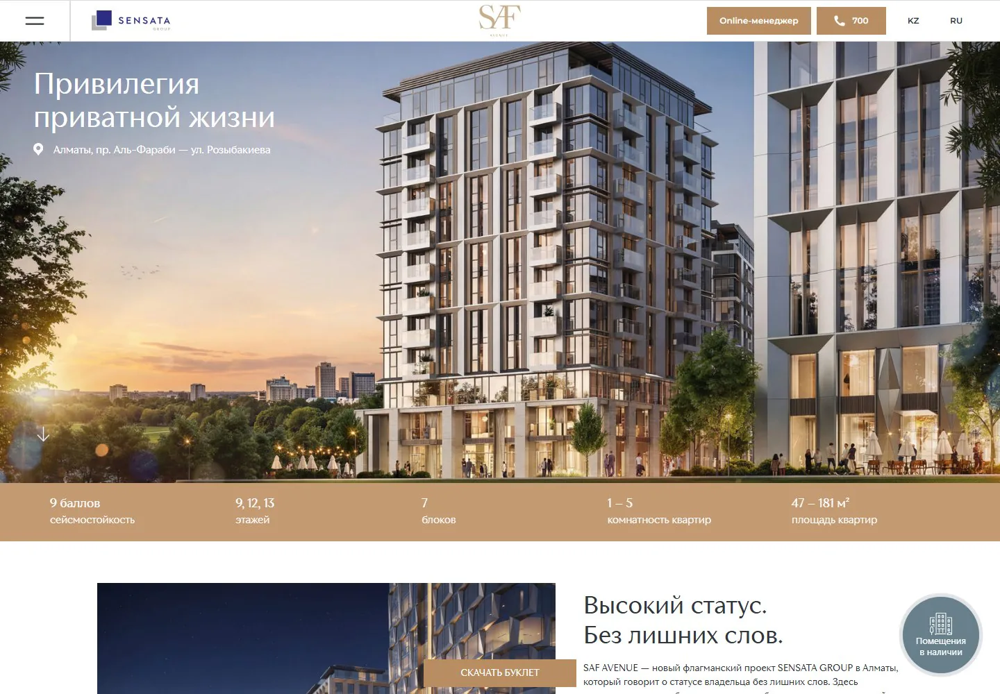

Сайт недвижимости
SAF Avenue — лендинг
Презентационный сайт жилого комплекса на двух языках.

Первый экран опубликованного сайта SAF Avenue
О проекте
Работа с существующим презентационным сайтом SAF Avenue: адаптация и публикация с сохранением исходной композиции, фотографий, анимаций и визуального стиля комплекса.
Что внутри
- Сохранение исходного дизайна комплекса
- Русская и казахская версии
- Фотогалереи и интерактивные блоки
- Адаптация статической публикации